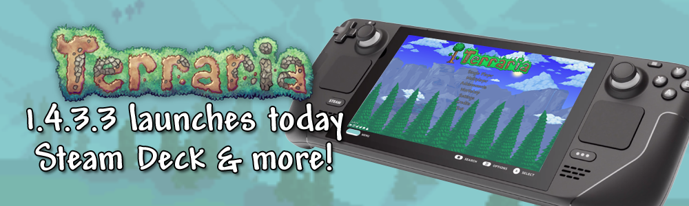

Terraria 1.4.3.3 - Steam Deck Optimization Update!

As we have mentioned over the past few months, the team has been hard at work on an update to further optimize Terraria for Steam Deck play - inclusive of performance and controls. With the Steam Deck officially shipping out to players starting today, we are pleased to be able to push this update out to everyone just in time! For Terrarians that are not playing on Steam Deck at this time, dont fret, as we have some quality of life, balance, and bug fixes for you as well. Without further ado, let's dive right in!
Please note that this update also includes an update to the Terraria Dedicated Server application. You can always find the latest version of this at the bottom of Terraria.org, but we have included a link below for today's version as well:
Bug Fixed
- Fixed an issue where the Eyebrella Cloud positioned itself oddly when a player is sleeping
- Fixed an issue where a number of blocks which should have blocked light were not blocking light
- Fixed an issue where Honey and Dry Bombs could not be placed on Weapon Racks
- Fixed an issue where Torch God's projectiles from Corrupt Torches generated snow dust
- Fixed an issue where Chester's Smart Cursor outline did not rotate with him when in the air
- Fixed an issue where walking Goldfish couldn't be Corrupted/Crimson'd like other Goldfish
- Fixed an issue where Desert Tiger did not bounce on enemies correctly if your Journey time settings were paused or sped up
- Fixed a bug with lava fishing gear incorrectly impacting fishing time
- Fixed an issue where Obsidian Armor had white item rarity even though, for its tier, it should have been a higher rarity color
- Fixed an issue where Lucy didn't speak if you cut down Palm Trees or Cacti
- Fixed some issues involving Jungle Shrines and Giant Mahogany Trees, where overlapping generation could cause broken chests
- Fixed an issue where Star-generating Cloak accessories did not properly sync their star generation in multiplayer
- Fixed a multiplayer issue where Plantera's spore projectiles were not syncing properly
- Fixed an issue where the Electrified debuff had an inaccurate and non-informative buff info text
- Fixed an issue causing Elf Melter to use 2 ammo per use
- Fixed an issue where Chain Guillotine's chain would vanish at some angles
- Fixed an issue where some UI Control text was broken in Polish language settings
- Fixed an text-based multiplayer crash
- Fixed rare crash when certain NPCs spawn in droves